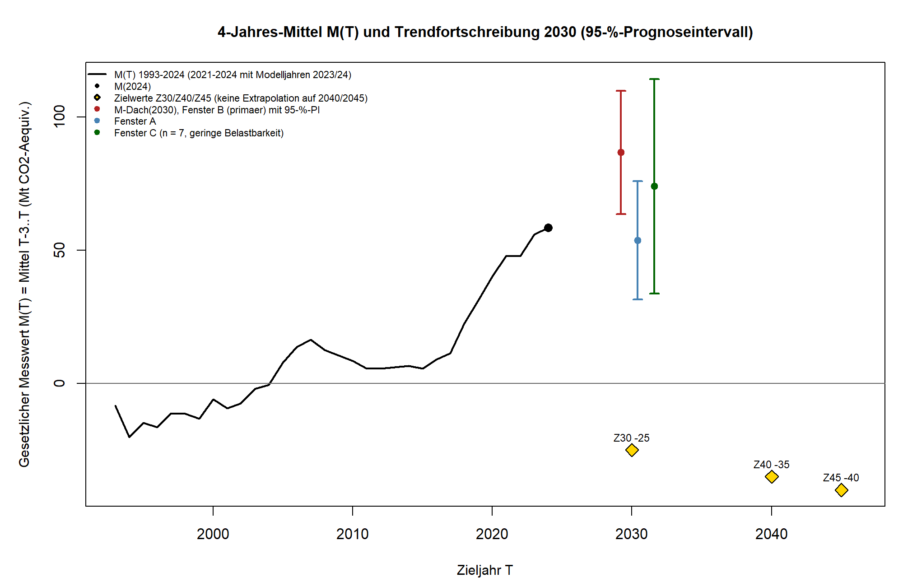

KLIMA KOMPASS · EVIDENZCHECK
1/6
Wie weit ist Deutschlands Landnutzung von der gesetzlichen Senke entfernt?
83,4 Millionen Tonnen CO₂-Äquivalent liegen zwischen dem Messwert 2024 und dem Ziel für 2030.
Klima Kompass · EvidenzcheckQuelle: UBA; Klimaschutzgesetz § 3a
WAS DAS GESETZ VERLANGT
2/6
Eine Senke, kein Ausstoß
Wälder, Äcker, Grünland, Feuchtgebiete und Siedlungen sollen zusammen mehr Treibhausgase aufnehmen als abgeben. Im Mittel der Jahre 2027 bis 2030 netto mindestens:
−25 Mio. t
CO₂-Äquivalent
Klima Kompass · EvidenzcheckQuelle: Klimaschutzgesetz § 3a
WO DER SEKTOR 2024 STEHT · MIO. T CO₂-ÄQUIVALENT
3/6
Der Sektor gibt Treibhausgase ab
+58,4
Messwert 2024Mittel 2021 bis 2024 · plus heißt: Quelle
−25
Ziel 2030Mittel 2027 bis 2030 laut Gesetz
83,4
AbstandMesswert minus Ziel
Die Jahre 2023 und 2024 sind Modellrechnungen, keine Messungen.
Klima Kompass · EvidenzcheckQuelle: UBA, Trendtabellen (15.01.2026)
TREND BIS 2030 · MITTEL 2027–2030
4/6
87
Hauptfenster 2010 bis 2024Intervall 64 bis 110
54
Fenster ab 1990Intervall 32 bis 76
74
Fenster ab 2018Intervall 34 bis 114 · nur 7 Jahre

Das Ziel von minus 25 liegt weit außerhalb. Das Fenster ab 2018 umfasst nur sieben Jahre und ist wenig belastbar.
Klima Kompass · EvidenzcheckQuelle: UBA; Auswertung Klima Kompass
WAS DIE DATEN NICHT SAGEN
5/6
- Keine Prognose. Eine Trendfortschreibung zeigt, was herauskäme, wenn die Entwicklung unverändert weiterliefe.
- Modellrechnungen. Die Jahre 2023 und 2024 sind keine Messungen, und das Inventar wird jedes Jahr komplett neu berechnet.
- Keine Ursachen. Die Analyse bewertet keine Maßnahmen und keine Personen.
- Keine Garantie. Biologische Senken sind nicht dauerhaft gesichert, Störungen können Kohlenstoff wieder freisetzen.
Klima Kompass · EvidenzcheckQuelle: Analysebericht Klima Kompass
FAZIT
6/6
DER ABSTAND
2024: plus 58,4. Ziel 2030: minus 25. Pro Jahr müsste sich das Mittel um etwa 13,9 Millionen Tonnen verbessern.
BISHER
Im Hauptfenster ging die Reihe um rund 4,9 Millionen Tonnen pro Jahr nach oben.
Ganzer Artikel: Link in Bio
Klima Kompass · EvidenzcheckQuelle: UBA; Auswertung Klima Kompass